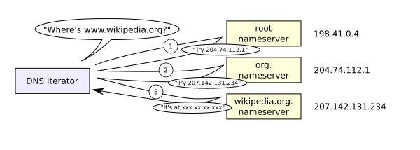

Loading a website on a server is an essential process that makes your website accessible to users worldwide.
Here’s a simple explanation of this process.
1. What is a Server?
A server is a computer that provides information to other computers called "clients" on a computer
network.[1] This architecture is called the client–server model. Servers can provide various
functionalities, often called "services", such as sharing data or resources among multiple clients or
performing computations for a client. A single server can serve multiple clients, and a single client can
use multiple servers. A client process may run on the same device or may connect over a network to a server
on a different device.[2] Typical servers are database servers, file servers, mail servers, print servers,
web servers, game servers, and application servers.[3]
2. Internet Protocol (IP) address

An Internet Protocol (IP) address is the unique identifying number assigned to every device connected to the
internet. An IP address definition is a numeric label assigned to devices that use the internet to
communicate. Computers that communicate over the internet or via local networks share information to a
specific location using IP addresses.
3. Domain Name System (DNS)
The Domain Name System (DNS) is a hierarchical and distributed name service that provides a naming system for
computers, services, and other resources on the Internet or other Internet Protocol (IP) networks. It
associates various information with domain names (identification strings) assigned to each of the associated
entities. Most prominently, it translates readily memorized domain names to the numerical IP addresses
needed for locating and identifying computer services and devices with the underlying network protocols.[1]
The Domain Name System has been an essential component of the functionality of the Internet since 1985.
4. Steps to Load a Website on a Server
Prepare Website Files:
Ensure your website's HTML, CSS, and JavaScript files are ready.
Choose a Hosting Service:
Select a hosting service like Hostinger, Bluehost, or AWS.
Free Hosting:
Platforms like GitHub Pages, Netlify, or Vercel.
Paid Hosting:
Options like Shared, VPS, or Dedicated Hosting.
Obtain a Domain Name:
Choose a unique name for your website, such as example.com.
Use FTP:
Use File Transfer Protocol (FTP) software like FileZilla to upload files to the server.
Make the Website Live:
After configuring server settings and DNS, your website will go live.